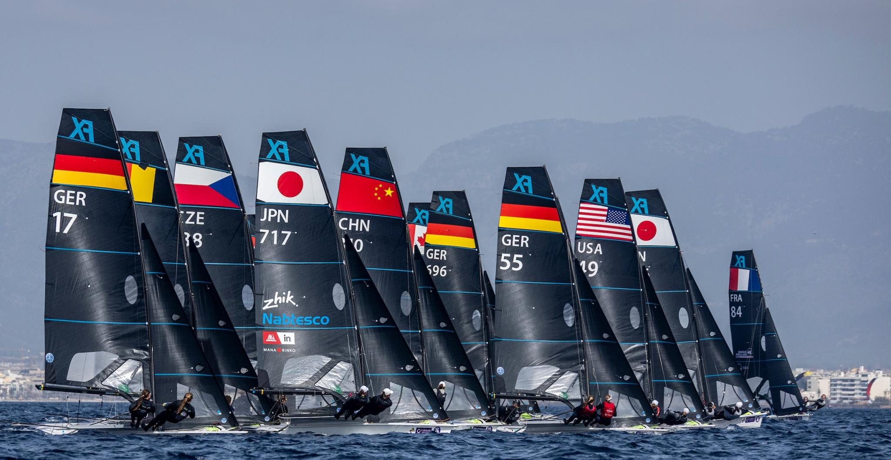
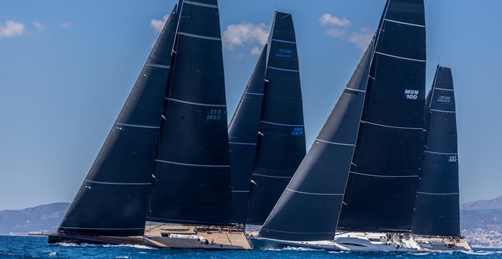
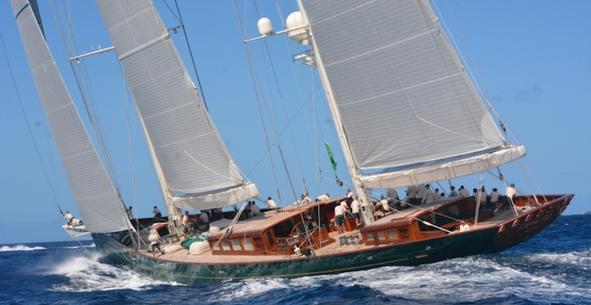

MARCH 27 – APRIL 4
BAY OF PALMA
The Trofeo Princesa Sofía S.A.R. (S.A.R. = Su Alteza Real / Her Royal Highness) is a prestigious, international sailing regatta held every year in the Bay of Palma since 1968. With various dinghy and windsurfing classes, this Olympic-level event attracts hundreds of top competitive sailors worldwide.
It is Princess Sofía of Spain herself, after whom the event is named, who often presents the awards, emphasising the event’s importance across the world.
This year, for its 55th anniversary, 1,200 sailors from 62 nations will compete in all ten Olympic classes.

Image credit: © SAILING ENERGY
To make finals more exciting for the 2028 Olympics, the Trofeo Princesa Sofía S.A.R. will be testing new changes proposed by World Sailing.
With not one but two final races to determine the podium across all classes except for Formula Kite and iQFOiL, these new changes will increase the chances of medal stage competitors to win a medal.
The event is based at Mallorca’s key yacht clubs around the Bay of Palma:
Real Club Náutico de Palma (RCNP)
Club Nàutic S’Arenal (CNA)
Club Marítimo San Antonio de la Playa (CMSAP)
Federación Balear de Vela (Balearic Sailing Federation – FBV)
You can see the events for free along the beaches and promenades around the Bay of Palma. There are also the key yacht clubs that host their own events for the competitions that you can freely attend to.
Live tracking and results are available at trofeoprincesasofia.org or you can download the official event app for real-time updates too!

Image credit: © SAILING ENERGY
The Sandberg PalmaVela, organised by the Real Club Náutico de Palma in Mallorca, will feature the event in two main parts:
La Larga (Offshore Race): April 23–27, 2026.
Multiclass Regatta: April 29 – May 3, 2026.

Image credit: © SAILING ENERGY
Europe’s oldest and longest-running superyacht regatta will be celebrating it 30th anniversary this year and will continue to feature competitive sailing and social events!